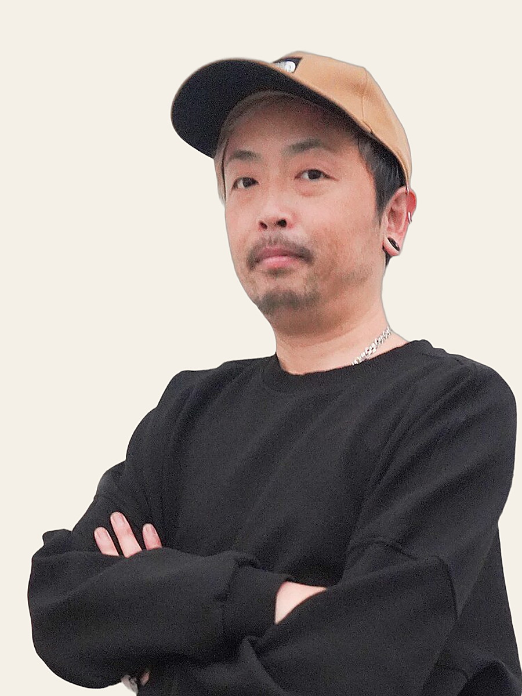
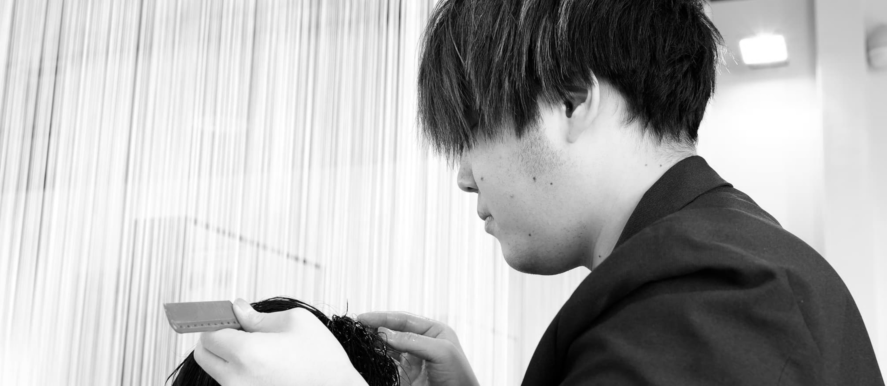
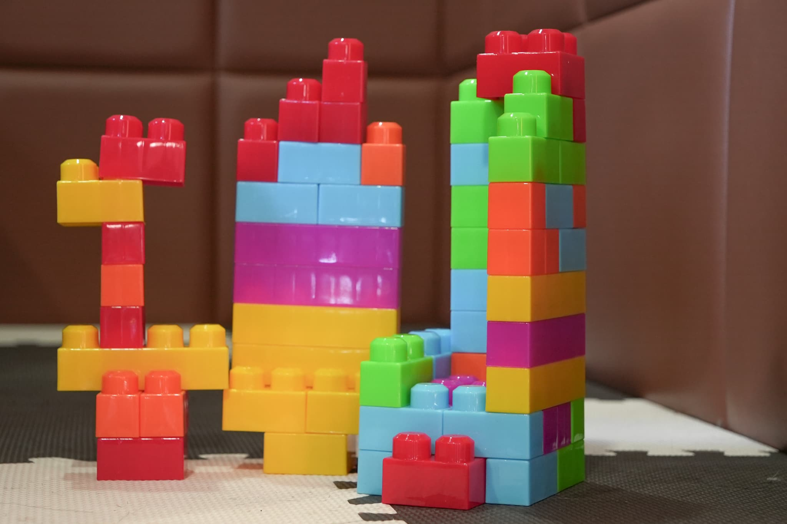
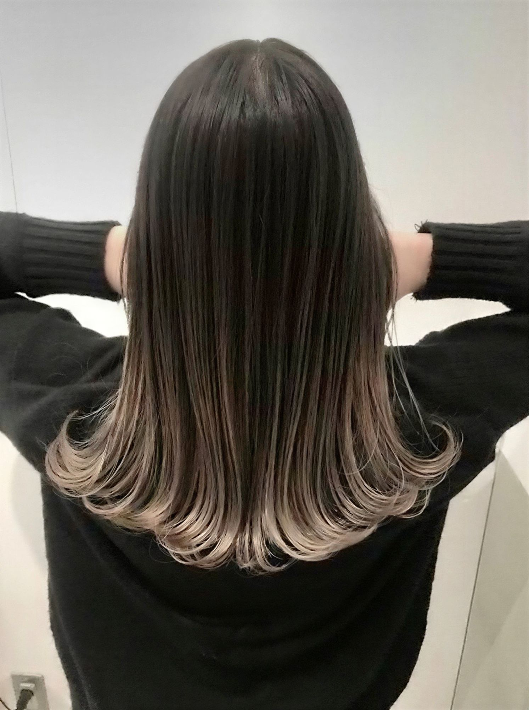
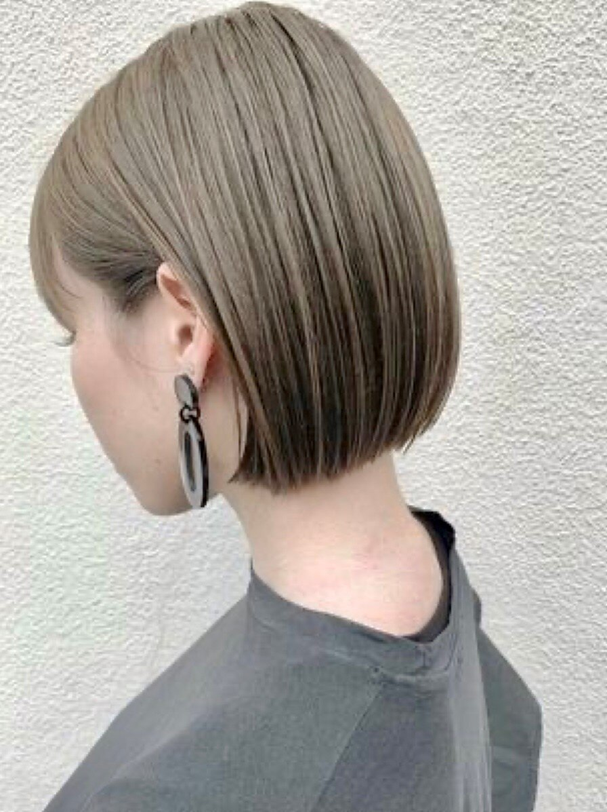
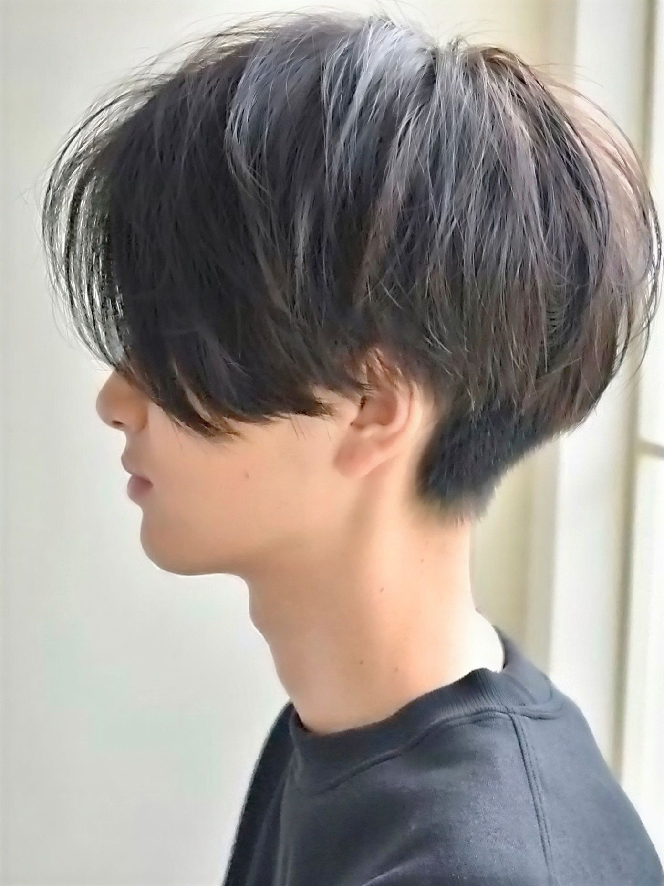
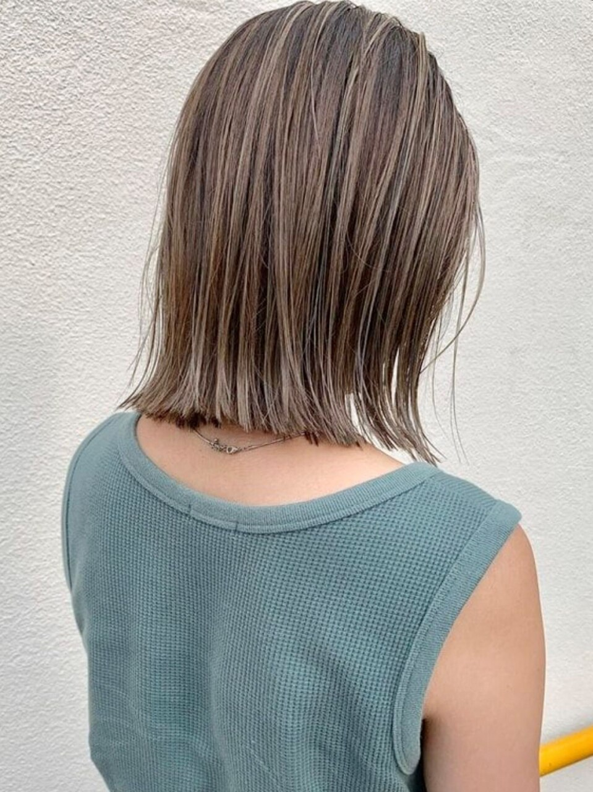
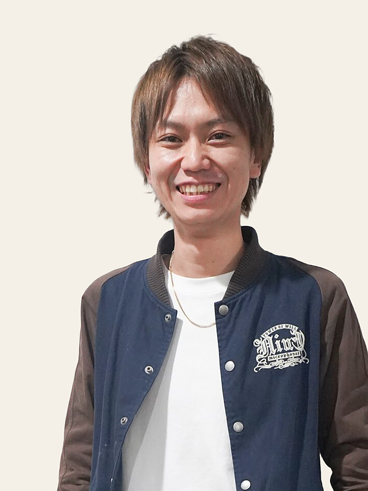
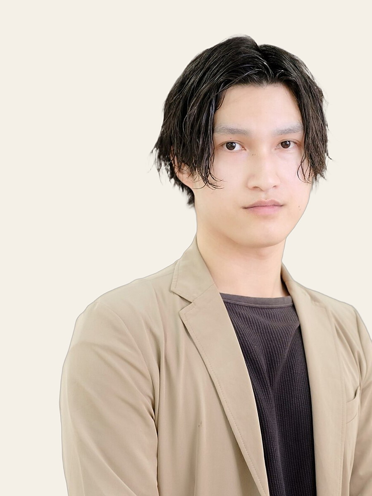

功刀 和也
スタイリスト・歴20年以上
グループ代表。髪質改善とデザインカラー、幅広いスタイル提案が得意です。
 True Trust 和戸店
True Trust 和戸店

和戸店
True Trust
酒折駅 徒歩10分/駐車場42台|10:00–19:00(カット最終18:00)・火曜定休
口コミ ★4.55(537件)ホットペッパービューティー 2026年7月時点
Story
和戸店は、True Trust グループの旗艦店です。ダブルカラーやインナーカラーなどのデザインカラー、髪質改善のご相談を多くいただいています。お客様一人ひとりの想いを大切にした丁寧なカウンセリングで、肌の色や目の色から似合う色味を見極め、カラーはお一人ずつ調合してご提案します。新規のお客様には「美肌カラー診断」を実施中。似合うカラー、より美肌効果の高いカラーのご提案を必ずさせていただきます。
JR酒折駅から徒歩10分、店舗には42台分の駐車場をご用意しています。お車でも電車でもお越しいただきやすい立地です。



Gallery





ご予約・ご相談はお気軽に
Staff

功刀 和也
スタイリスト・歴20年以上
グループ代表。髪質改善とデザインカラー、幅広いスタイル提案が得意です。

中村 翔太
スタイリスト・歴12年
お一人おひとりに合わせた似合わせとカラーのご提案が得意です。

星山 直輝
スタイリスト・歴11年
豊富な薬剤知識を活かした髪質改善が得意です。

雨宮 邑樹
スタイリスト・歴8年
ホワイトカラーなどの特殊カラーと、小顔に見せるカットが得意です。

大森 彩加
スタイリスト・歴7年
ダブルカラーと、透明感のある柔らかいデザインカラーが得意です。

西野 瑞希
スタイリスト・歴7年
ハイトーン・くすみカラーなどのデザインカラーが得意です。
Voice
口コミ ★4.55(537件・ホットペッパービューティー 2026年7月時点)
「カウンセリングが丁寧で、色味や髪型を相談しやすい」
「カラーも縮毛矯正も、仕上がりに満足できた」
「自宅でのホームケアの方法まで教えてくれた」
上記は口コミ傾向の要約文です。出典: ホットペッパービューティー(2026年7月時点)
ご予約・ご相談はお気軽に
Guide
JR酒折駅から徒歩10分。店舗の駐車場(42台)もご利用いただけます。ご予約時間にお越しください。
髪のお悩みやなりたいイメージを、丁寧にお伺いします。
髪の状態を見極めながら、リラックスしてお過ごしいただけるよう施術します。
ご自宅での再現のコツやケア方法もあわせてお伝えします。
FAQ
はい。店舗に42台分の駐車場をご用意しています。お車でお越しください。
個室をご用意しています。ご利用については、お電話(055-268-2705)でお問い合わせください。
はい。キッズスペースをご用意していますので、お子さま連れでもお気軽にお越しください。
当日の空き状況によってはご案内できます。お電話(055-268-2705)で空き状況をご確認のうえお越しいただくのがおすすめです。
Visa・Mastercard・JCB・American Express・Diners Club・Discover の各種クレジットカードのほか、PayPay・d払い・au PAY・メルペイ・楽天ペイがご利用いただけます。
歓迎しています。メンズカット・メンズパーマもご相談ください。
Reservation